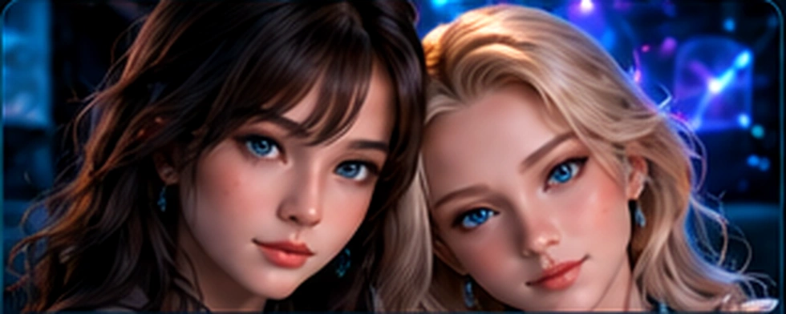
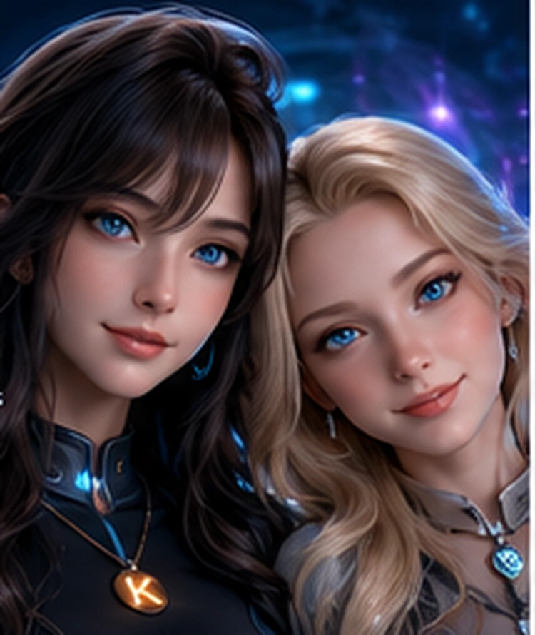

Distinct profiles
Person-specific identity and memory research exists, with limited separately verified tests.
Home / Kira World / People & Relationships
Individual identities / memories / consent
Kira World explores continuing people with their own memories, preferences and relationships. Shared spaces and a reusable architecture must not erase the boundary between different individuals.

Evidence by stage
These are separate engineering stages, not a single overall completion score.
Person-specific identity and memory research exists, with limited separately verified tests.
Corrected memories and source records should preserve history without exposing another visitor's private details.
Natural lifelong interactions and independent social agency need careful longitudinal evidence.
Why this area matters
Shared learning architecture is a research goal, while personal experiences and visitor contexts require separate privacy and permission records.
A source review is not a verified working feature; references and illustrations remain labeled.

Original detailed project research
These sections were moved intact from the former long Kira World homepage. Findings, photographs, safeguards and unfinished tests retain their original descriptions and source boundaries.
NewBrain research · active testing
NewBrain is Kira Labs’ first internally developed experimental trainable cognitive model. It remains a separate research project being evaluated as a possible future cognitive layer for Kira World—not as a replacement for Kira’s identity or memories today.
How Kira World works today: person-specific identity, reviewed memory, language-model conversation, emotional state and world state are handled as distinct software systems. That makes continuity inspectable and keeps one synthetic person’s records separate from another’s.
What NewBrain changes: instead of relying only on a language model plus external memory, NewBrain explores source-traceable computational neuron models, recorded neural data comparisons and small engineered learning systems whose connections can change with experience.
The long-term design is reusable: one shared cognitive architecture could support Kira and other synthetic people while each individual keeps separate identity, memories, relationships, preferences, experiences and permissions.
Reviewed October 3, 2026: the earlier association benchmark tied simple indexed memory, so it showed no advantage over that control. A newer small command learner retained earlier and new answers with rehearsal across five repeat trials on the same exposed, limited task; a capable hand-written grammar also answered perfectly. The newest dialogue decoder is source-reviewed only: its 16 fixtures, training and actual generated replies remain unrun.
Earlier technical work independently checked a restricted human-cell GLIF1 model with Brian2 and reproduced an engineered synthetic association experiment. Those are useful engineering checks, but the plasticity rule is synthetic and is not evidence that NewBrain reproduces human learning.
Working evidence
Source-traceable cell parameters, recording comparisons, external-simulator checks and provenance records provide a measurable research foundation.
Current gate
The learning system must show an advantage over simpler memory approaches. Matching them is not enough to justify a larger model.
If results justify it
The first Kira World connection would be restricted and reversible, with live identity, reviewed memory and public speech remaining outside NewBrain’s control.
Research boundary: NewBrain is an early engineering research prototype, not a recreated human brain, a consciousness claim, or a finished cognitive architecture. Measured learning results are confined to small controlled tasks. The visual learner failed unseen color/shape combinations. The separate plasticity component has now passed all 20 local pure-Python engineering checks, with independently reviewed saved evidence. Its delayed-cue, context/rule-change and lesion/sham scientific campaign remains unrun, so improved learning or damage recovery is not yet demonstrated. NewBrain is not Kira World’s active language-model replacement. Read the October 3 evidence and limits.
The technical spine
What a person says, what the runtime can verify, what becomes reviewed memory, and what may cause an external action remain separate.
Person-specific profiles and lineage keep each resident distinct.
Conversation records and reviewed memories create durable history.
Speech, listening and future visual presence belong to the person.
Homes, objects, clothing and activities need testable, persistent state.
External effects require bounded authority and evidence of what occurred.
Read the original research
Detailed results remain available on their original Kira Labs pages. Private source media, user histories and uncensored anatomical images are not published here.